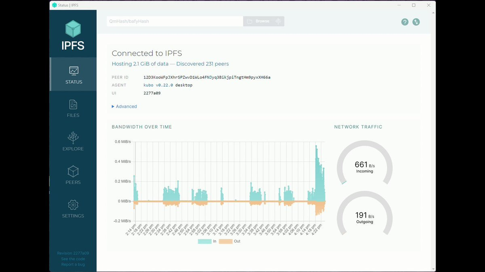
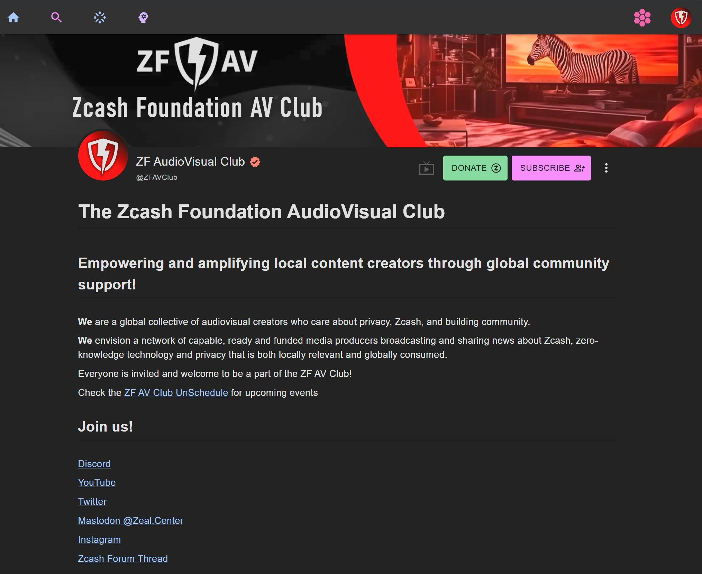

Long-term publishing for decentralized communities
Zk Av Club helps decentralized technology communities run publishing homes for their media.
Places where recordings live, stay organized, and remain accessible long after events end.
What makes a publishing home work
1) Publishing infrastructure
We help communities set up publishing homes people can depend on:
Instance and channel setup
Repeatable publishing workflows
Content organization for discovery
2) Content stewardship
Publishing is only the beginning. Stewardship keeps media usable over time:
Metadata and indexing
Rights and consent hygiene
Moderation and takedown workflows
Versioning and updates
Much of this work is quiet infrastructure: permissions, policies, and repeatable workflows that keep a media home healthy over time. Some of it is straightforward operations. Some of it involves testing emerging distribution approaches, such as seeding, mirroring, or other peer‑to‑peer techniques.
Why decentralized media?
Community media is easiest to lose when it depends on a single platform’s incentives.
We focus on approaches that support:
Community control
Resilient distribution
Long‑term stewardship
PeerTube is a strong fit for many communities, but it is not the only option. Our job is to help each community choose a path that fits their values and constraints, and then help them get it running.

Current implementation
Decentralized media for Zcash
PeerTube for Zcash is our first public implementation, but it is only one example. We expect to test, iterate, and support additional decentralized media options as we work with more communities.
If you are looking for the Zcash PeerTube decision, rollout plan, and how publishing will work, start here:

What you can expect from Zk Av Club
We aim for:
Clear standards for labeling and organization
Reliable upload and handoff workflows
A steady path toward better accessibility (captions, transcripts, and related tools)
Clear scope for requests and responsibilities
Roadmap
Zcash is the starting point. Over time, this project will expand to include:
Additional community media implementations
Publishing playbooks and templates
Metadata and indexing guidelines
Publishing pipelines for event recordings
Community media needs homes that last. We are here to help build them.